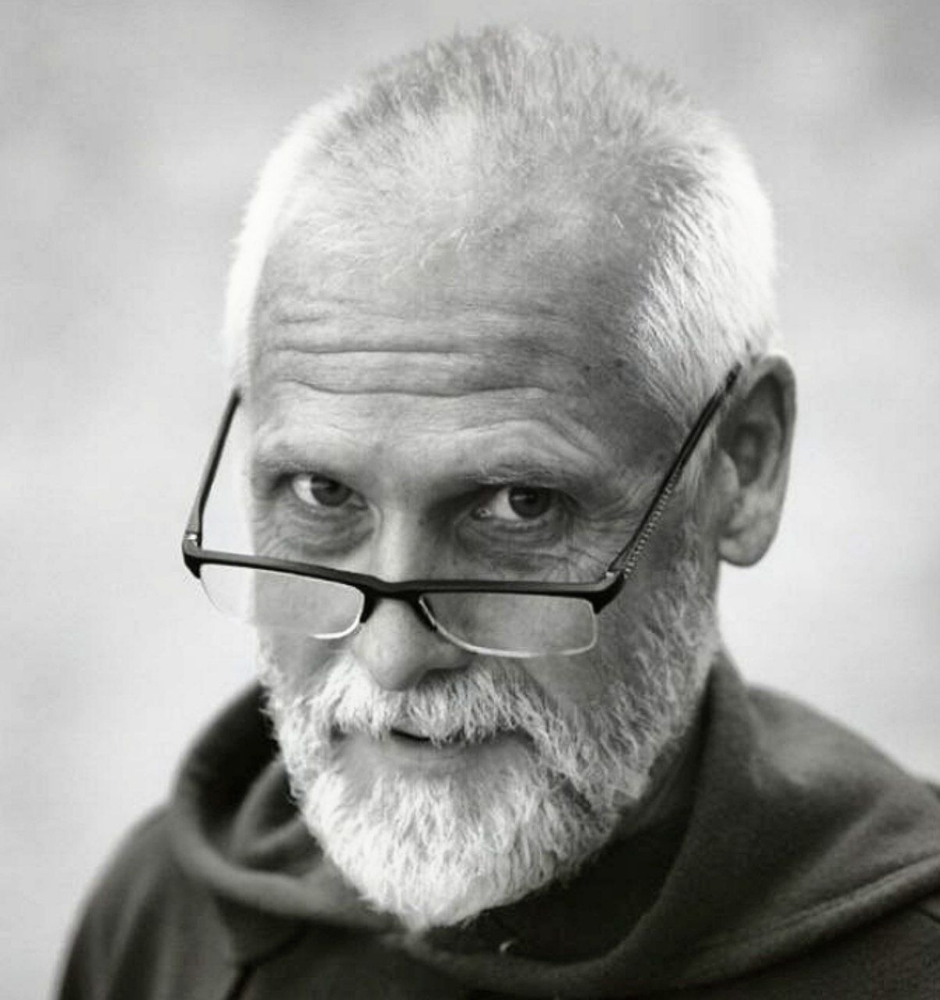

Молитва за тех, кто нуждается в помощи свыше
Принимаю добровольные пожертвования и молюсь за ваши нужды. За прощение грехов и исправление ошибок, за здоровье и удачу, за бизнес и семью. И за многое другое. Каждый достоин милости. Без осуждения. Без условий. Только искренняя молитва.

Более пятнадцати лет я посвятил себя келейной молитве и духовной практике. В уединении своей кельи я обращаюсь к Богу и святым Его за помощью тем, кто потерял дорогу, запутался в грехах или столкнулся с непреодолимыми трудностями.
Ко мне обращаются люди разных судеб: предприниматели с нечистой совестью, бизнесмены на грани закона, обычные люди в беде. Я не задаю вопросов о морали. Моя задача — молиться искренне, глубоко, до последнего вздоха.
Это не торговля святыней. Это духовное служение, которое требует материальной поддержки. Ваши пожертвования позволяют мне продолжать это моё малое молитвенное служение, жить в уединении и посвящать время молитве за каждого, кто ко мне обратился.
Я верю, что искренняя молитва способна изменить судьбу. Не мгновенно, не волшебным образом, но через очищение, через изменение судьбы, через открытие новых путей там, где раньше была стена.
Иногда помощь приходит внезапно и таинственным образом откуда не ждёшь.
Успех в делах, защита от конкурентов, мудрость в решениях, удача в сделках, очищение от нечестных доходов. Стартапы и новые начинания.
Чтобы избежать уголовной ответственности. О назначении минимального наказания.
За чиновников и бизнесменов, за простых людей.
Смягчение участи, защита от несправедливости, очищение совести, возможность начать заново.
Исцеление себя и близких, укрепление духа во время болезни, поиск врачей, внутренняя сила.
Молюсь об удаче брокеров, трейдеров, криптанов, игроков, спортсменов, студентов, бизнесменов и всех, кому нужна удача.
Удача в учёбе, бизнесе, в делах и семье, работе и жизни. Просто удача.
Общий покровительствующий молитвенный щит, удача в начинаниях, защита от зависти и негатива, финансовый поток.
Выход из депрессии, разрешение конфликтов, прощение обид, внутренний душевный покой.
Молюсь об обретении супруга, супруги, о создании и сохранении семьи, о даровании детей, о детях, здоровье детей, об учёбе и всё, что связано с семьёй.
Нет стандартных шаблонов. Каждая ситуация уникальна. Напишите, и мы обсудим вашу потребность.
Молитва не продается. Но молитва требует времени, энергии и ресурсов.
Ваше пожертвование — это благодарность и возможность продолжать молитвенную помощь.
Чем больше сумма пожертвовагий, тем глубже и дольше я могу молиться за вас, больше уделять времени молитве.
Суммы пожертвований указаны ориентировочно и не являются обязательными. Жертвуйте от души. Жертвуйте столько, сколько подскажет вам ваша душа.
После перевода обязательно сообщите мне в Telegram или заполните форму связи (ниже) с указанием суммы и вашей просьбой.
Суммы пожертвований указаны ориентировочно и не являются обязательными. Жертвуйте от души. Жертвуйте столько, сколько подскажет вам ваша душа.
Я создал и являюсь руководителем религиозной группы "КЕЛЕЙНЫЙ ХРАМ ЕВГЕНИЯ", о чём мною получены подтверждения Министерства Юстиции Российской Федерации.
Подтверждения Минюста РФ
Алтайский край
Управление Минюста РФ по Алтайскому краю
29.10.2026 № 22/03-6337-26
Ведомственный № религиозной группы 2218010104
Алтайский край
Управление Минюста РФ по Алтайскому краю
09.09.2024 № 22/03-4783
Ведомственный № религиозной группы 2218010084
Астраханская область
Управление Минюста РФ по Астраханской области
29.10.2026 № 30/03-4261/26
Ведомственный № религиозной группы 3018010048
Астраханская область
Управление Минюста РФ по Астраханской области
02.09.2024 № 30/03-3250
Ведомственный № религиозной группы 3018010036
Курганская область
Управление Минюста РФ по Курганской области
30.10.2026 № 45/03-3288/26
Ведомственный № религиозной группы 4518010096
Курганская область
Управление Минюста РФ по Курганской области
29.08.2024 № 45/03-2451
Ведомственный № религиозной группы 4518010089
Ярославская область
Управление Минюста РФ по Ярославской области
02.11.2026 № 76/03-3752/26
Ведомственный № религиозной группы 7618010041
Ярославская область
Управление Минюста РФ по Ярославской области
28.08.2024 № 76/03-3966
Ведомственный № религиозной группы 7618010032
Иркутская область
Управление Минюста РФ по Иркутской области
16 августа 2024 № 38/03-7566
Ведомственный № религиозной группы 3818010190
Республика Татарстан
Управление Минюста РФ по Республике Татарстан
22.08.2024 № 16/03-4788
Ведомственный № религиозной группы 1618010085
Ханты-Мансийский автономный округ
Управление Минюста РФ по Ханты-Мансийскому АО
27.08.2024 № 86/03-3159
Ведомственный № религиозной группы 8618010071
Томская область
Управление Минюста РФ по Томской области
30.08.2024 № 70/03-2749
Ведомственный № религиозной группы 7018010047
Пермский край
Управление Минюста РФ по Пермскому краю
02.09.2024 № 59/03-3875
Ведомственный № религиозной группы 5918010093
Воронежская область
Управление Минюста РФ по Воронежской области
03.09.2024 № 36/03-5503
Ведомственный № религиозной группы 3618010091
Оренбургская область
Управление Минюста РФ по Оренбургской области
11.09.2024 № 56/03-3530
Ведомственный № религиозной группы 5618010111
Пожертвования строго добровольны и являются поддержкой моего молитвенного служения. Это моя личная практика. Каждый решает сам, верить или нет. Я не гарантирую конкретных материальных результатов, только мою искреннюю молитву.
«Каждый уделяй по расположению сердца, не с огорчением и не с принуждением; ибо доброхотно дающего любит Бог.»
— 2 Коринфянам 9:7
«Давайте, и дастся вам: мерою доброю, утоптанною, трясовою и переполненною отсыплют вам в лоно ваше; ибо, какою мерою мерите, такою же отмерится и вам.»
— Евангелие от Луки 6:38
«Блаженнее давать, нежели принимать.»
— Деяния Апостолов 20:35
«Приносите все десятины в дом хранилища, чтобы в доме Моем была пища, и хотя бы этим испытайте Меня, говорит Господь Саваоф: не открою ли для вас отверстий небесных и не изолью ли на вас благословения до избытка?»
— Малахия 3:10
«Творящий милость бедному дает взаймы Господу, и Он воздаст ему за благодеяние его.»
— Притчи 19:17
«Если исповедуем грехи наши, то Он, будучи верен и праведен, простит нам грехи наши и очистит нас от всякой неправды.»
— 1 Иоанна 1:9
«Молитесь друг за друга, чтобы исцелиться: много может усиленная молитва праведного.»
— Иакова 5:16
«Не судите, да не судимы будете; не осуждайте, да не осуждены будете; прощайте, и прощены будете.»
— Евангелие от Луки 6:37
Напишите мне напрямую. Отвечаю по возможности быстро.
Всё общение строго конфиденциально с моей стороны.
Спасибо за обращение. Я получил ваше сообщение и, при необходимости, свяжусь с вами в ближайшее время для уточнения деталей.
Благодарю за донат!